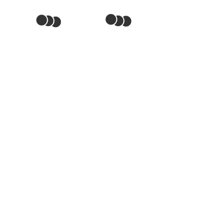

Alkoholische Gärung
Decarboxylierung

Abb. 1: C-Körperschema der Decarboxylierung
- Von jedem der beiden C3-Körper Brenztraubensäure (= Pyruvat) wird jeweils ein Kohlenstoffdioxid-Molekül abgespalten.
- Es entstehen zwei C2-Körper Ethanal (= Acetyldehyd).
Externe Links
Alkoholische Gärung
Decarboxylase